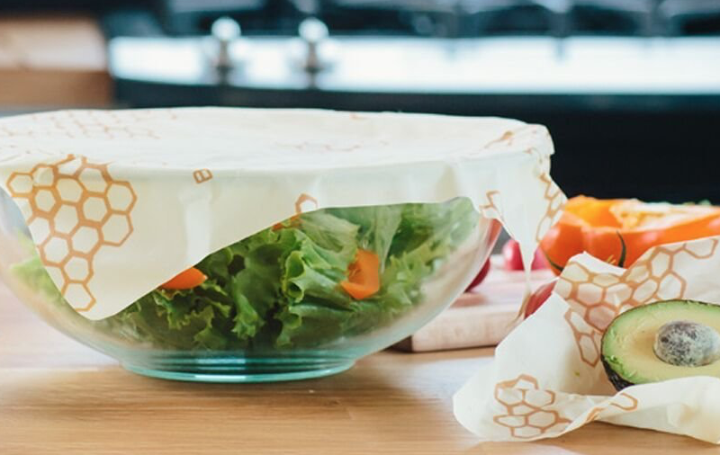

April 13, 2018
Bees Wax to Nix the Plastic Wrap

If you read our post about recyclable plastic bags last Thursday, you’ll know that plastic wrap is one of those films that cannot be recycled. Because, to quote ourselves, “the chemicals and resins added to make the cling wrap “clingy” and stretchable cannot be removed, making it too complex a plastic to recycle.”
Finley’s sister Callie found these wax alternatives earlier this fall and has been using them ever since. Using the heat of your hand, you can make a tight seal on your glass container, or even use them to wrap up your half-used onions and lemons, with the wax sealing to itself. The price tag is a little off-putting, but considering the environmental and literal cost of numerous rolls of plastic wrap a year, it’s adds up to a pretty good deal!
Pro tip: Don’t leave them soaking alongside your dirty dishes; extended contact with soapy water doesn’t seem to be very good for them!
Photo—complements of Amazon